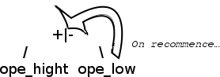

Ce tutoriel est une première approche à la compilation (ou plutôt à l'interprétation), à travers la réalisation d'un petit interpréteur d'expression mathématiques, une calculatrice qui calcule les expression usuelle, comme `2+(54+3*4)`, en respectant la priorité des opérateurs, et les parenthèses. Bien entendu, il sera possible par la suite d'étendre la syntaxe de l'interpréteur.
Les domaines abordés dans ce tutoriel seront nombreux. Je préconise les connaissances suivantes :
Les codes d'exemple seront écrits en OCaml, et demande parfois des bases dans le langage pour bien comprendre les codes postés : ocaml est un langage particulièrement bien adapté à ce type de problèmes, mais la théorie s'applique bien sur à tous les langages :).
Ce document est juste une petite introduction à l'interprétation (et peut-être plus largement à la compilation, bien que nous produirons pas de langage source), où vous serez amenés, pour accompagner les quelques informations théoriques, à créer une petite calculatrice.
Très simplement, on peut traiter le problème en trois étapes :
l'analyse lexicale (ou lexer) : la chaîne de caractères est convertie en une liste de lexèmes comme ["56"; "+"; "3"] ;
l'analyse syntaxique (ou parser) : on transforme les jetons en un arbre syntaxique ;
l'exécution : on calcule l'arbre syntaxique, et on renvoie un résultat.
D'une manière plus générale, on retrouve ces parties dans n'importe quel processus de compilation. En fonction du langage compilé, une "exécution" peut être une traduction dans un autre langage (C++ vers assembleur, etc.), tout dépend de ce que l'on veut faire avec après découpage et construction de l'arbre syntaxique. Ici, nous allons simplement calculer l'arbre.
L'analyseur syntaxique construira un arbre binaire, où chaque nœud possède soit 0 fils (un nombre) soit 2 fils (pour un opérateur). Ex d'un tel arbre :
Le lexer est l'étape qui consiste en la transformation de la chaîne de caractères qui contient l'expression mathématique en une pile de jetons (tokens ou lexèmes). Ainsi l'expression "45+3*78" peut se décomposer en : "45", "+", "3", "*", et "78".
Pour créer le lexer, à partir de la chaîne de caractères, il existe des outils spécialisés comme Flex par exemple (un outil GNU), mais il est tout à fait possible de s'en sortir "à la main". Pour notre calculatrice, nous avons besoin des jetons "+", "-", "*", "/", "(", ")" et des nombres. Les autres jetons seront considérés comme inconnus.
En OCaml, le module Genlex permet l'obtention d'un lexer avec une facilité remarquable :
open Genlex
let lexer str =
let keywords = ["("; ")"; "+"; "-"; "*"; "/"] in
make_lexer keywords (Stream.of_string str)
La fonction retournera à partir d'une chaîne de caractères un stream. Un stream est une liste paresseuse destructive : l'élément suivant d'un stream n'est calculé que quand on le demande, et il est automatiquement supprimé (il existe aussi des moyens de lire les éléments du stream sans les supprimer).
Ici, pour l'expression "56+3", la fonction lexer renverrait ce stream : [< 'Int 56; 'Kwd "+"; 'Int 3 >]
Dans d'autres langages, comme PHP par exemple, ce genre de bibliothèque n'existe pas. Il faut donc coder le lexer à la main, et cela est tout à fait faisable. Si vous le pouvez, utilisez comme structure de données la file (premier entré, premier sorti), il me semble que c'est la structure de données la plus adaptée.
L'objectif du parseur est de transformer le lexer en un arbre syntaxique abstrait (AST en anglais). Dans cet arbre, il n'y a plus de parenthèses, et l'ordre des éléments insérés définit l'ordre dans lequel les opérations vont être calculées. Par exemple, pour l'expression "(56+18)*3", correspondant donc au lexer "(", "56", "+", "18", ")", "*", "3", l'arbre correspondant serait le suivant :
On voit bien que l'addition 56+18 sera effectuée en premier, puis ensuite sera effectuée la multiplication par 3 du résultat de 56+18. Toute la difficulté est d'obtenir cet arbre : l'opérateur de puissance à la priorité sur la multiplication et la division, qui ont la priorité sur l'addition et la soustraction, et les parenthèses ont la priorité sur l'ensemble des opérateurs !
Comment s'en sortir ?
La BNF
Théorie
On voit ici que réfléchir de cette façon est délicate. Il faudrait écrire tout cela mathématiquement. Deux chercheurs en informatique, John Backus et Peter Naur, également confrontés à un problème similaire, ont alors inventés la BNF, pour Backus Naur Form.
L'objectif était de pouvoir décrire rigoureusement un langage de programmation.
La BNF est constituée de méta-symboles, de règles terminales et de règles non terminales. Les méta-symboles sont les symboles propres à la BNF. Chaque règle est constituée de deux parties : son nom et sa définition. nom_regle ::= definition_de_la_regle. Lorsque la règle appelle une autre règle, elle est dite non-terminale.
Les méta-symboles de la BNF sont "(", ")", "+", "*", "[", "]", "|", et "'". Le symbole "|" signifie "ou". Chaque mot ou expression recherché est entouré d'apostrophes. Ainsi, on peut définir un nombre de cette façon :
Cela signifie que chaque nombre est constitué d'un chiffre suivi soit de rien, soit d'un autre chiffre. Le symbole "*" signifie répéter 0 fois ou plus, et le symbole "+" signifie répéter au moins une fois et le symbole "?" signifie "doit être présent" 0 ou une fois. Ainsi Num peut se définir également de cette façon :
L'idée, c'est que plus l'opérateur est fort en terme de priorité, plus il doit être appelé "vite", car ce sont les opérateurs forts qui doivent se retrouver en bas de l'arbre (pour être exécutés en premier). La règle pth est la plus forte : elle est donc exécutée en premier (car ope_low appelle d'abord ope_high qui appelle d'abord pth). Ensuite il y a ope_high et ope_low.
Entre les parenthèses, on revient à ope_low, c'est un autre calcul qui commence. Dans cet exemple très simple, la fonction qui valide la syntaxe de la phrase et la fonction qui transforme le lexer en arbre binaire n'en sont qu'une seule. Chaque fonction (règle) renverra un arbre binaire.
Tous les nombres qui seront dans l'arbre sont des éléments terminaux de l'arbre. Par exemple, dans l'arbre correspondant à "5 + 3", 5 et 3 n'ont pas d'enfants :
Donc dans la règle pth, quand le token sera un nombre, on renverra un arbre qui contient juste le nombre en noeud.
Dans les autres règles, ope_low, ope_high et pow, on renvoie un arbre ou le noeud est l'opérateur, ou la partie droite est la fonction de priorité supérieure et la partie gauche est cette même fonction. Par exemple, pour ope_low, l'arbre serait :

Vous comprenez le principe ? Bien, maintenant passons à l'implémentation.
Implémentation du parseur
Tout d'abord, définissons la structure de l'arbre binaire que l'on va ressortir :
type tree =
| Nb of int
| Op of tree * string * tree
Le type arbre est composé soit d'une feuille terminale (Nb), soit d'un sous arbre (Op) composé d'un string (le nom de l'opérateur) et de deux sous-arbres, à gauche et à droite. C'est donc un type récursif.
Pour implémenter la grammaire décrite, on peut soit utiliser des outils comme Bison, ou le faire à la main. Dans ce cas, la technique consiste à voir chaque règle comme une fonction. Chaque fonction renvoie un arbre, et la valeur renvoyée à la fin est un arbre constitué d'un empilement des arbres renvoyés par les fonctions.
Implémentons la règle ope_low :
(* ope_low ::= ope_high(('+'|'-')ope_high)* *)
let rec ope_low =
let rec aux gauche = parser
[<'Kwd (("+" | "-") as op); droite = ope_high; s >] -> aux (Op (gauche, op, droite)) s
| [< >] -> gauche
in
parser [< gauche = ope_high; s >] -> aux gauche s
La fonction ope_low prend en argument le lexer (grâce au mot clé "parser"), traite le ope_high (qui renvoie un arbre binaire, appelons-le "gauche"), et match le reste du lexer. S'il y a un opérateur faible qui vient juste après, et que le reste du lexer vérifie la règle ope_high (arbre binaire "droite"), on renvoie un arbre binaire constitué de l'opérateur en noeud, de "gauche" pour la branche gauche et de "droite" pour la branche droite, puis on recommence (rappel de la fonction aux jusqu'à ce que les tokens suivants ne respectent plus le motif [<'Kwd (("+" | "-") as op); droite = ope_high; s >] .
De la même manière, on peut implémenter toutes les autres règles :
let rec ope_low =
let rec aux gauche = parser
[<'Kwd (("+" | "-") as op); droite = ope_high; s >] -> aux (Op (gauche, op, droite)) s
| [< >] -> gauche
in
parser [< gauche = ope_high; s >] -> aux gauche s
and ope_high =
let rec aux gauche = parser
[<'Kwd (("*" | "/" | "mod") as op); droite = pth; s >] -> aux (Op (gauche, op, droite)) s
| [< >] -> gauche
in
parser [< gauche = pth; s >] -> aux gauche s
and pth = parser
| [< 'Kwd "("; e = ope_low; 'Kwd ")" >] -> e
| [< 'Int n >] -> Nb n
On voit que le code de chaque fonction respecte la forme de la règle qui lui correspond. On observe également que le code de la fonction ope_high et le code de la fonction ope_low sont très proches. On peut donc "factoriser" les deux fonctions :
let op_parser op_list next_level =
let rec aux gauche next_level = parser
[<'Kwd op when List.mem op op_list; droite = next_level; s >] -> aux (Op (gauche, op, droite)) next_level s
| [< >] -> gauche
in parser [< gauche = next_level; s >] -> aux gauche next_level s
let rec ope_low l = op_parser ["+"; "-"] ope_high l
and ope_high l = op_parser ["*"; "/"] pth l
and pth = parser
| [< 'Kwd "("; e = ope_low; 'Kwd ")" >] -> e
| [< 'Int n >] -> Nb n
soit le noeud est un nombre, et on renvoie ce nombre ;
soit le noeud est un opérateur, et on l'applique sur ses deux enfants.
Cela donne en OCaml :
let rec execute tree = match tree with
| Nb n -> n
| Op(fg, r, fd) ->
let gauche, droite = execute fg, execute fd in
match r with
| "+" -> gauche + droite
| "-" -> gauche - droite
| "*" -> gauche * droite
| "/" -> gauche / droite
| _ -> failwith "Fonction non connue."
Une fois ces trois étapes implémentées, vous devriez obtenir un code similaire à celui-ci :
open Genlex
type tree =
| Nb of int
| Op of tree * string * tree
let lexer str =
let keywords = ["("; ")"; "+"; "-"; "*"; "/"] in
make_lexer keywords (Stream.of_string str)
let parseur lexer =
let op_parser op_list next_level =
let rec aux gauche next_level = parser
[<'Kwd op when List.mem op op_list; droite = next_level; s >] -> aux (Op (gauche, op, droite)) next_level s
| [< >] -> gauche
in parser [< gauche = next_level; s >] -> aux gauche next_level s
in
let rec ope_low l = op_parser ["+"; "-"] ope_high l
and ope_high l = op_parser ["*"; "/"] pth l
and pth = parser
| [< 'Kwd "("; e = ope_low; 'Kwd ")" >] -> e
| [< 'Int n >] -> Nb n
in ope_low lexer
let rec execute tree = match tree with
| Nb n -> n
| Op(fg, r, fd) ->
let gauche, droite = execute fg, execute fd in
match r with
| "+" -> gauche + droite
| "-" -> gauche - droite
| "*" -> gauche * droite
| "/" -> gauche / droite
| _ -> failwith "Fonction non connue."
let () =
let c = read_line() in
let r = execute (parseur (lexer c)) in
print_int r
Cela vient en fait du module Genlex qui, en prenant les int, prend les "-" suivis d'un nombre comme des entiers négatifs. Une technique simple pour éviter cela est de mettre automatiquement un espace entre chaque "-" et chaque nombre.
Reprenons le stream de char généré par la fonction Stream.of_string str :
let rec minus = parser
[< ''-'; s >] -> [< ''-'; '' '; minus s >]
| [< 'a; s >] -> [< 'a; minus s >]
| [< >] -> [< >] in
Cette fois c'est bon, notre calculette est opérationnelle :
open Genlex
type tree =
| Nb of int
| Op of tree * string * tree
let lexer str =
let rec minus = parser
| [< ''-'; s >] -> [< ''-'; '' '; minus s >]
| [< 'a; s >] -> [< 'a; minus s >]
| [< >] -> [< >] in
let keywords = ["("; ")"; "+"; "-"; "*"; "/"] in
make_lexer keywords (minus(Stream.of_string str))
let parseur lexer =
let op_parser op_list next_level =
let rec aux gauche next_level = parser
[<'Kwd op when List.mem op op_list; droite = next_level; s >] -> aux (Op (gauche, op, droite)) next_level s
| [< >] -> gauche
in parser [< gauche = next_level; s >] -> aux gauche next_level s
in
let rec ope_low l = op_parser ["+"; "-"] ope_high l
and ope_high l = op_parser ["*"; "/"] pth l
and pth = parser
| [< 'Kwd "("; e = ope_low; 'Kwd ")" >] -> e
| [< 'Int n >] -> Nb n
in ope_low lexer
let rec execute tree = match tree with
| Nb n -> n
| Op(fg, r, fd) ->
let gauche, droite = execute fg, execute fd in
match r with
| "+" -> gauche + droite
| "-" -> gauche - droite
| "*" -> gauche * droite
| "/" -> gauche / droite
| _ -> failwith "Fonction non connue."
let () =
let c = read_line() in
let r = execute (parseur (lexer c)) in
print_int r
On peut très facilement perfectionner cette approche, qui se veut didactique et est donc simple. Voici quelques idées qui me viennent à l'esprit :
intégrer l'opérateur puissance et l'opérateur modulo ;
perfectionner la gestion de l'opérateur "-", qui est encore archaïque ;
définir une nouvelle grammaire pour que l'on puisse utiliser des fonctions comme sqrt (5+3) ou encore 5+gcd(56,12).
La grammaire pourrait alors être la suivante :
ope_low ::= ope_high (('+'|'-') ope_high)*
ope_high ::= pow (('*'|'/'|'%')pow)*
pow ::=pth ('^' pth)*
pth ::= '('ope_low')' | num | fonction
fonction ::= lettres '(' (ope_low(', 'ope_low)*)? ')'
lettres ::= ('a'|...|'z')+
num ::= chiffre+ (',' chiffre+)?
chiffre ::= '0'|...|'9'
J'espère que cette petite introduction à la compilation vous a plu. J'aimerais finir ce tutoriel en vous rappelant que ce qui compte, ce n'est pas forcément de comprendre pourquoi il y a un ";" derrière une de mes fonctions dans un des codes présentés, mais bien de comprendre le concept et les idées qu'il y a derrière, pour que vous puissiez implémenter cette technique dans votre langage favori le jour où vous en aurez besoin.
Pour aller plus loin, vous pouvez essayer d'implémenter d'autres formes d'expression mathématiques, comme la notation lisp (ex : (+ 5 (* 2 3)) ). Sa B.N.F. est S:='(' fonction S* ')' | num
Si la compilation en général vous interesse, je vous invite à lire le dragon book, Compilateurs : principes, techniques et outils, une référence dans le domaine, ainsi que le LLC (pdf), qui présente dans la dernière partie de nombreux exemples, jusqu'à l'écriture d'un compilateur d'ocaml !
Je tiens à remercier Kuragari, un élève de l'Epitech, qui m'a fait découvrir cette technique.
Sachez également que j'ai appris ce procédé en partie par des recherches personnelles, je n'ai jamais été dans une école d'informatique, et par conséquent il risque d'y avoir de petites erreurs, mots non adaptés, voire peut-être même une vue d'ensemble erronée. Si tel est le cas, je vous invite à m'en faire part, ainsi que de toutes vos questions ou autres remarques.
Merci pour votre lecture.
Remerciements : bluestorm pour l'optimisation (refonte) des codes OCaml, Guillawme et Ejis pour la correction de l'orthographe.